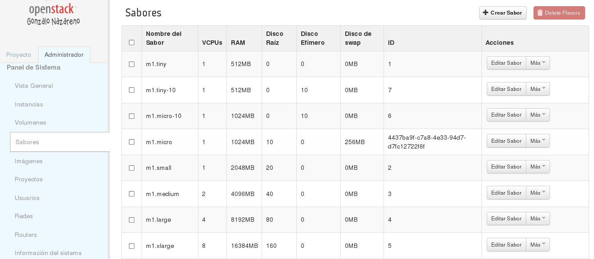
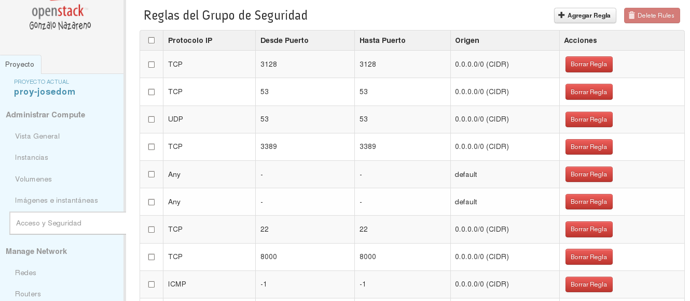
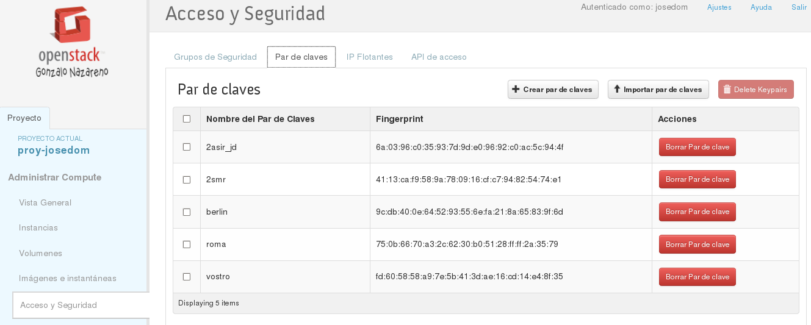
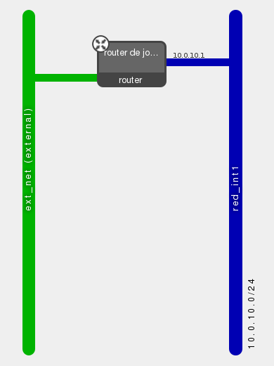
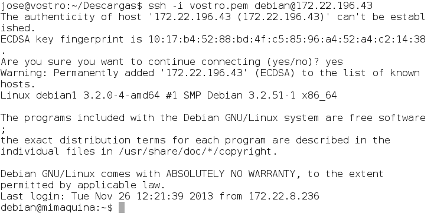

Introducción a Horizon
- Horizon es el panel de control web (dashboard) de OpenStack
- Es una aplicación web desarrollada en Django
- Implementa las funcionalidades básicas de los componentes principales de OpenStack: Nova, Glance, Swift, etc.
- Ideal para que usuarios noveles utilicen OpenStack
- Como todos los componentes de OpenStack está sometido a un fuerte desarrollo, por lo que cambia bastante con cada versión.
- Aquí utilizamos Horizon de OpenStack Grizzly (2013.1)
Acceso a horizon
- Acceso mediante usuario/contraseña
- Dos roles predefinidos: admin y member
- Un usuario con el rol member puede:
-
- Crear instancias
- Modificar el estado de sus instancias
- Adquirir direcciones IP flotantes
- Asociar direcciones IP píblicas a sus instancias
- Crear y editar reglas de acceso a sus instancias mediante los Grupos de Seguridad
- Crear pares de clave ssh y asociarlas a instancias
- ...
Conceptos previos
- Imagen: Imagen de sistema preconfigurado que se utiliza como base para crear instancias. Dentro del cloud podemos encontrar diferentes imágenes para cada tipo de instacia que se quiera utilizar.
- Instancia: Clon de una imagen que se crea a demanda del usuario en uno de los nodos del cloud.
- Un sabor (flavor) define para una instancia el número de CPUs virtuales, la RAM, si dispone o no de discos efímeros, etc.
Conceptos previos
- IP fija: Dirección IP con la que se crean las instancias y que se utiliza para comunicación interna.
- IP flotante: Dirección IP que puede asociarse a diferentes instancias con el fin de acceder a ellas desde fuera.
- Grupo de seguridad: Reglas de cortafuegos (iptables) que controlan el acceso a las instancias mediante la dirección IP flotante.
- Par de claves ssh: Utilizadas para acceder por ssh a las instancias desde fuera del cloud
Creación de una instancia
Elegir la imagen que vamos a instanciar

Elegir el sabor que va a tener la instancia

Asignar el grupo de seguridad con el que va a trabajar la instancia

Elegir la clave RSA que nos va a posibilitar el acceso a la instancia

Elegir la red interna (o redes) a la que va a estar conectada la instancia

Elegir la red interna (o redes) a la que va a estar conectada la instancia
Asociar IP Flotante a la instancia
- Las direcciones IP asignadas se denominan fijas porque son sólo para comunicación interna.
- Para poder acceder a un equipo del cloud desde fuera es necesario asociarle una dirección IP flotante.
- En "Acceso y Seguridad" vamos a la sección "IP Flotantes" y asignamos una IP al proyecto.
- Seleccionamos la dirección IP flotante y la asociamos a una de las instancias lanzadas.
Acceso a la instancia

Acciones que podemos relaizar sobre las intancias
- Asociar IP Flotante
- Desasociar IP Flotante
- Editar Instancia
- Editar Grupos de Seguridad
- Consola
- Ver Log
- Pausar Instancia
- Suspender Instancia
- Reinicio soft Instancia
- Reinicio hard Instancia
- Terminar Instancia